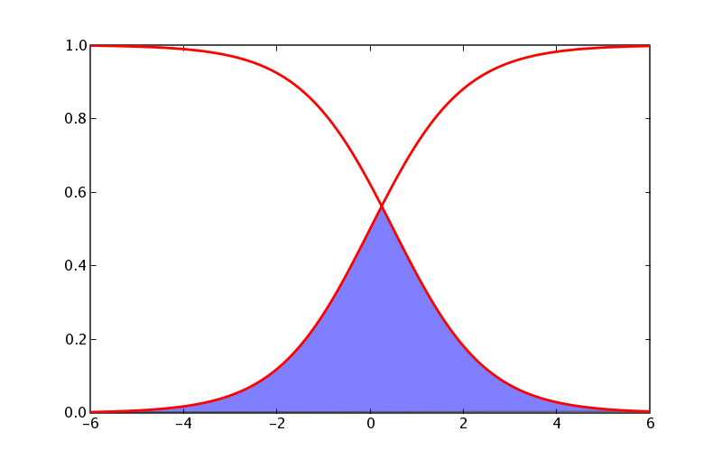

matplotlib’s approach to plotting functions requires you to compute the x and y vertices of the curves you want to plot and then pass it off to plot. Eg for a normal pdf, matplotlib.mlab provides such a function:
from matplotlib.mlab import normpdf
import matplotlib.numerix as nx
import pylab as p
x = nx.arange(-4, 4, 0.01)
y = normpdf(x, 0, 1) # unit normal
p.plot(x,y, color='red', lw=2)
p.show()
Of course, some curves do not have closed form expressions and are not amenable for such treatment. Some of the matplotlib backends have the capability to draw arbitrary paths with splines (cubic and quartic) but this functionality hasn’t been exposed to the user yet (as of 0.83). If you need this, please post to the mailing list or submit a sourceforge support request.
Rich Shepard was interested in plotting “S curves” and “Z curves”, and a little bit of googling suggests that the S curve is a sigmoid and the Z curve is simply 1.0-sigmoid. There are many simple forms for sigmoids: eg, the hill, boltzman, and arc tangent functions. Here is an example of the boltzman function:
import matplotlib.numerix as nx
import pylab as p
def boltzman(x, xmid, tau):
"""
evaluate the boltzman function with midpoint xmid and time constant tau
over x
"""
return 1. / (1. + nx.exp(-(x-xmid)/tau))
x = nx.arange(-6, 6, .01)
S = boltzman(x, 0, 1)
Z = 1-boltzman(x, 0.5, 1)
p.plot(x, S, x, Z, color='red', lw=2)
p.show()
See also sigmoids at mathworld.
People often want to shade an area under these curves, eg under their intersection, which you can do with the magic of numerix and the matplotlib [http://matplotlib.sourceforge.net/matplotlib.pylab.html#-fill fill] function:
import matplotlib.numerix as nx
import pylab as p
def boltzman(x, xmid, tau):
"""
evaluate the boltzman function with midpoint xmid and time constant tau
over x
"""
return 1. / (1. + nx.exp(-(x-xmid)/tau))
def fill_below_intersection(x, S, Z):
"""
fill the region below the intersection of S and Z
"""
#find the intersection point
ind = nx.nonzero( nx.absolute(S-Z)==min(nx.absolute(S-Z)))[0]
# compute a new curve which we will fill below
Y = nx.zeros(S.shape, typecode=nx.Float)
Y[:ind] = S[:ind] # Y is S up to the intersection
Y[ind:] = Z[ind:] # and Z beyond it
p.fill(x, Y, facecolor='blue', alpha=0.5)
x = nx.arange(-6, 6, .01)
S = boltzman(x, 0, 1)
Z = 1-boltzman(x, 0.5, 1)
p.plot(x, S, x, Z, color='red', lw=2)
fill_below_intersection(x, S, Z)
p.show()
As these examples illustrate, matplotlib doesn’t come with helper functions for all the kinds of curves people want to plot, but along with numerix and python, provides the basic tools to enable you to build them yourself.
CategoryCookbookMatplotlib